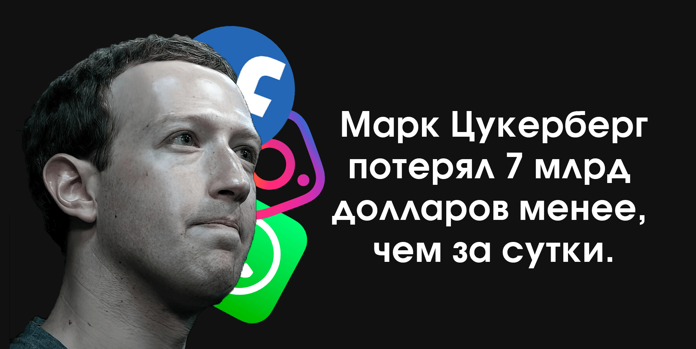
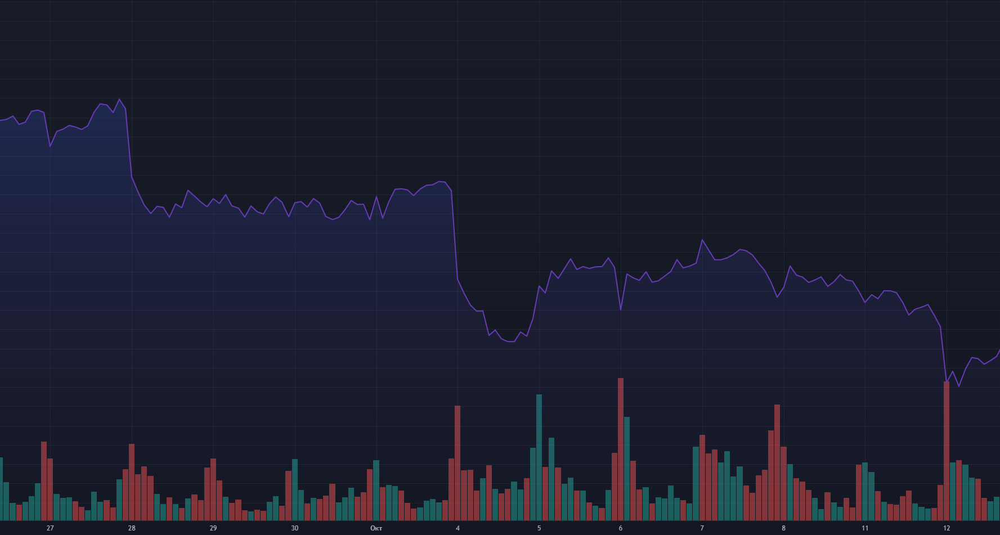
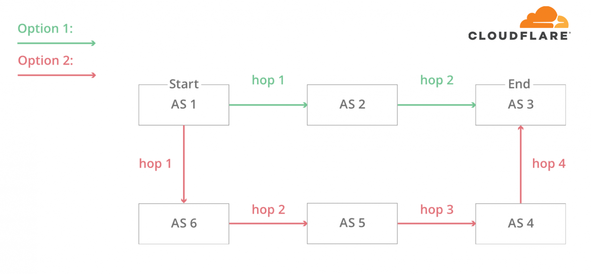
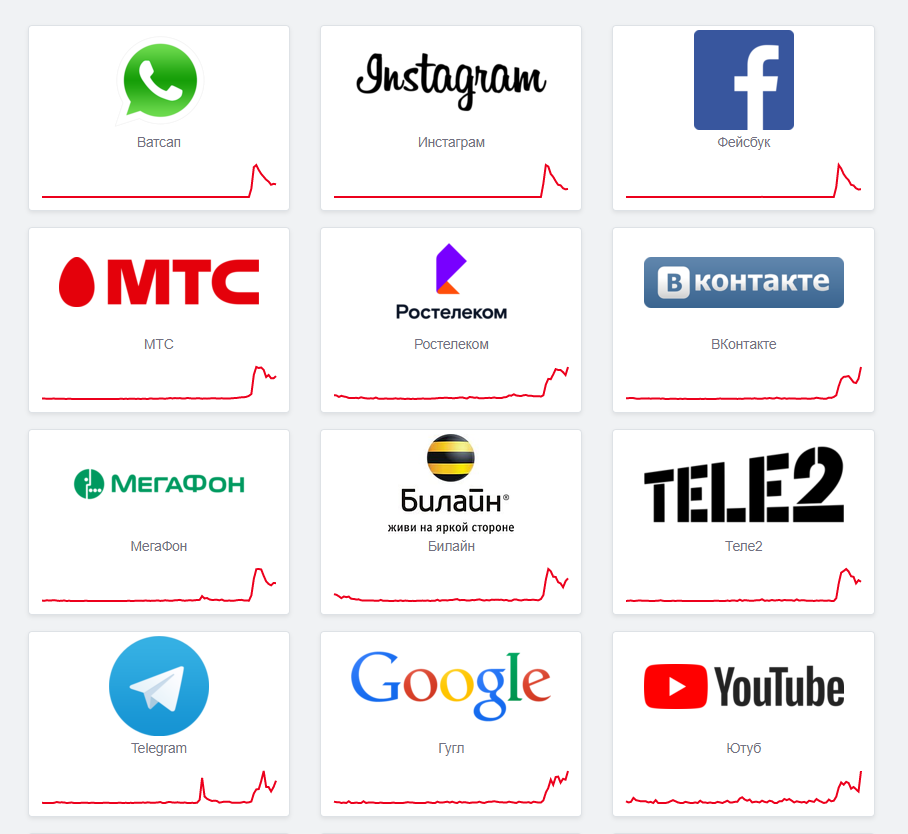
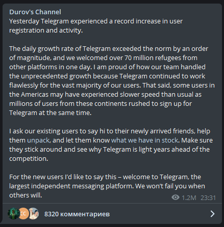

В сервисах Facebook, Whatsapp,
Instagram произошли крупные сбои,
в ходе которых Марк Цукерберг
потерял почти 7 миллиардов
долларов менее, чем за 6 часов
Присмерно в 18:00 по московскому времени пользователи стали сообщать о проблемах с доступом в Facebook, WhatsApp и Instagram, свидетельствуют данные американского ресурса Downdetector, который отслеживает крупные сбои в интернете. 52% пользователей жаловались на работу мобильных приложений, 26% — на активность веб-сайтов.
Через два часа уже был недоступен и TikTok. Также сообщалось о проблемах с Twitter и «ВКонтакте». При этом в пресс-службе последней компании отметили, что сбоев в работе соцсети нет. Там также указали на всплеск активности пользователей сервисов. й. Доступ к сервисам оборвался по всему миру примерно на шесть часов.
Позже стало известно, что сбой также произошёл у Netflix, Zoom, Viber, Tinder, YouTube. Сбой был признан крупнейшим в Facebook с 2008 года.

*Акции Facebook за 27 сентября - 12 октября (Происшествие 4 октября)
В день отключения акции Facebook упали на 4,89%, Twitter — на 5,79%, Alphabet — на 2,11%, Amazon — на 2,85%, а состояние генерального директора Facebook Марка Цукерберга упало на 6,6 миллиарда долларов, так как владеет около 15% акций Facebook. Впрочем, уже на следующий день после падения сервисов акции поднялись обратно на пару процентов.
Согласно официальному сообщению Facebook по факту сбоя, специалисты неудачно обновили конфигурацию магистральных маршрутизаторов, которые координируют сетевой трафик. В результате произошёл разрыв связи, который «эффектом домино нарушил связь между дата-центрами». При этом работать перестали не только пользовательские сервисы, но и внутренние инструменты компании, поэтому восстановление затянулось.

*Принцип работы BGP, из-за которого упал Facebook
Большую роль в падении фейсбука сыграл протокол BGP. Как он устроен:
- Чтобы информация из одной автономной системы в интернете (AS) попадала к другой, построили систему обмена данными о конфигурации и расположении узлов в подсетях. Обмен друг с другом информацией о расположении сетей происходит по протоколу BGP.
- Протокол BGP (Border Gateway Protocol или «протокол граничного шлюза») — это «карта» возможных маршрутов, по которым большие роутеры, благодаря которым работает интернет, передают сетевые пакеты до мест назначения. Без BGP роутеры не знают, что им делать;
- BGP позволяет одной сети (например, Facebook) сообщать о своём существовании другим сетям, которые в конечном счёте формируют весь интернет.
Другой важный аспект падения фейсбука касается DNS-записей. Как они устроены:
- Каждая автономная система в интернете может порождать специальные префиксы (означают, что они контролируют группу IP-адресов) и транзитные префиксы (они знают, как добраться до определённых групп адресов). AS объявляет интернету о своих DNS-префиксах с помощью BGP, и так другие сети её находят;
- Система доменных имён (Domain Name System — DNS) позволяет сопоставить доменные имена веб-ресурсов с IP-адресами физических устройств, на которых они расположены. Это аналог «телефонного справочника» в интернете: DNS конвертирует вводимые пользователями названия сайтов в цифровые адреса.

*Страница сайта Downdetector.com во время сбоев
Почему не работали другие сервисы?
Причины, почему пострадали другие сервисы, могут быть какие угодно. Возможно, взаимосвязь и есть, но мы её не видим и, возможно, никогда не узнаем. Например, сайт Ozon не грузился потому, что он для загрузки требовал законнектиться к фейсбуку.
Это просто перебои, потому что пользователи фейсбука и других сервисов перетекли в другие. Но перераспределение трафика могло повлиять на работу многих провайдеров: мы привыкли, что на круговом движении машина движется направо, а тут что-то поменялось, и часть провайдеров могла с этим не справиться.
Очень многие соцсети могли так же работать: из-за не очень грамотного встраивания в код авторизации через фейсбук страница не могла отрендериться, пока не подтянется код, а ему неоткуда подтянуться. Внешне для пользователей могло показаться, что сервис не работает. Конечно, был и наплыв. Telegram во время падения Facebook рассказал о 50 миллионах регистраций.

*"Вчера в Telegram произошел рекордный рост
регистрации и активности пользователей.
Ежедневные темпы роста Telegram на порядок превысили норму, и за один день мы приняли более 70 миллионов беженцев с
других платформ.<...>"
После падения сервисов Facebook в телеграмм пришло новых 70 млн пользователей, в Twitter и Tiktok произошёл всплеск активности. Этот сбой - очень сильный удар по репутации компании Марка Цукерберга. Facebook, скорее всего поработают над протоколами, и уменьшат риски повторения проблемы. А остальные подумают, как устроить работу своих сервисов без зависимости от других, чтобы когда не падал один сайт, не падал и второй.